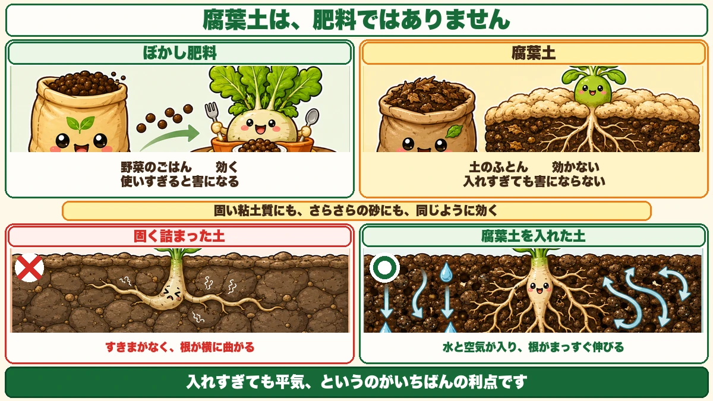
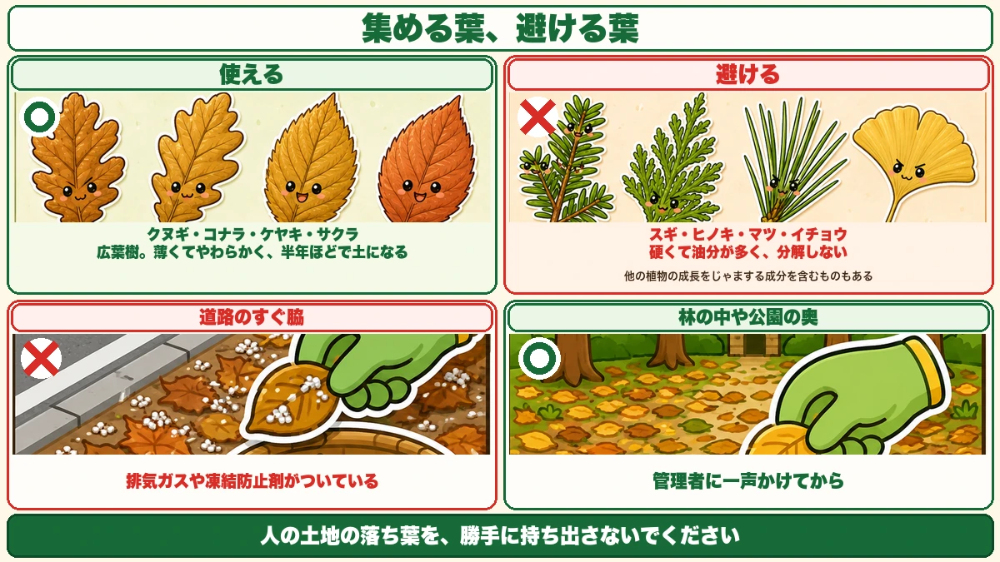
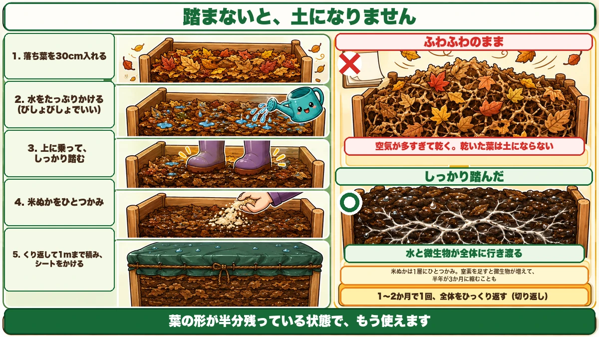

落ち葉は、踏むほど早く土になります🍂 冬にしか作れないもの

🍂「腐葉土って、買うと意外と高いですよね」
🍂「落ち葉を積んでおいたけど、1年経っても葉のままでした」
🍂「ぼかし肥料と腐葉土は、何が違うんですか？」
どうも、8150（えいこう）です🌱 家庭菜園歴8年、理科の教員免許を持っていて、有機・無農薬で野菜を育てています。
今日は、落ち葉の話です。
先に、この記事でいちばん言いたいことを言っておきますね。
★腐葉土は、落ち葉と水と時間だけで作れます。
そして★材料は、この季節に道ばたで拾えます。冬にしか作れないものです。
腐葉土とぼかし肥料は、別ものです

役目がちがいます
前に、ぼかし肥料の話をしました。★あれは肥料です。窒素やリン酸を野菜に届けるためのものです。
腐葉土は★肥料ではありません。土そのものを変えるためのものです。
- ★ぼかし肥料 … 野菜のごはん。効く。使いすぎると害になる
- ★腐葉土 … 土のふとん。効かない。入れすぎても害にならない
★入れすぎても平気、というのが腐葉土のいちばんの利点です。肥料は加減が要りますが、腐葉土は「たっぷり」で構いません。
何が変わるのか
腐葉土を入れると、土の中に★すきまができます。
すきまがあると、★水が入る、空気が入る、根が伸びる。そして微生物が住みつきます。
★固い粘土質の畑にも、さらさらすぎる砂の畑にも、同じように効きます。どちらの問題も「すきまの作り方」だからです。
集めるとき、選ぶ葉

広葉樹の葉を集める
いちばんいいのは★クヌギ、コナラ、ケヤキ、サクラなどの広葉樹です。
薄くてやわらかく、★分解が早いのが理由です。半年ほどで土になります。
入れてはいけない葉
★スギ、ヒノキ、マツなどの針葉樹は避けてください。
理由は2つあります。★葉が硬くて油分が多く、なかなか分解しません。そして★他の植物の成長をじゃまする成分を含んでいます。
★イチョウも避けたほうが無難です。分解に時間がかかります。
集める場所の注意
これは大事なところです。★道路のすぐ脇の落ち葉は使わないでください。
排気ガスや、冬にまかれる凍結防止剤がついていることがあります。★公園の奥や、林の中の葉を選んでください。
そして★人の土地の落ち葉を勝手に持ち出さないこと。公園も、管理者に一声かけると気持ちよく譲ってくれることが多いです。
作り方は、踏むだけです

手順
- ★囲いを作る。竹や木の枠、ブルーシート、大きな袋でもいい
- ★落ち葉を30cmほど入れる
- ★水をたっぷりかける。びしょびしょでいい
- ★上に乗って、しっかり踏む
- ★米ぬかをひとつかみ、ぱらぱらとまく
- ★これを繰り返して、1mくらいまで積む
- ★最後にシートをかけて、雨が入りすぎないようにする
★あとは待つだけです。
なぜ踏むのか
ここが、失敗する人としない人の分かれ目です。
★踏むと、葉と葉のすきまが減って、水と微生物が全体に行き渡ります。
ふわふわのまま積むと、★空気が多すぎて乾きます。乾いた葉は、何年経っても葉のままです。
★「1年経っても葉のままでした」の原因は、ほぼ乾燥です。踏みが足りていません。
米ぬかを足す意味
落ち葉だけでも土にはなりますが、★遅いです。
落ち葉は炭素が多くて窒素が少ない。★分解する微生物は、窒素がないと増えられません。
そこに★米ぬかをひとつかみ足すと、微生物が一気に増えます。★半年が3か月に縮むこともあります。
入れすぎる必要はありません。★1層につきひとつかみで十分です。
途中で1回、切り返す
1か月から2か月たったら、★全体をひっくり返してください。切り返しと呼びます。
外側は乾いていて、中は湿っています。★混ぜることで、全体が同じように分解します。
面倒なら省いても構いませんが、★やると仕上がりが揃います。
できあがりの見分け方
葉の形が半分残っているくらいでいい
完全に土になるまで待たなくて大丈夫です。★葉の形が半分くらい残っている状態で、もう使えます。
むしろ★形が残っているほうが、土にすきまを作る働きは強いです。
においで分かる
いい腐葉土は★森の土のにおいがします。しっとりして、いやなにおいがしません。
★酸っぱいにおいや、アンモニアのにおいがしたら、水が多すぎるか、空気が足りていません。切り返して、乾かしてください。
学ぶ：葉は、誰が分解しているのか🔬
理科の時間です。
落ち葉が土になるまでには、★順番があります。
★最初に来るのは、ダンゴムシやヤスデ、ミミズなどの小さな生きものです。彼らは葉を食べて、細かくします。
細かくなると★表面積が増えます。1枚の葉より、こなごなになった葉のほうが、菌が取りつける面積がずっと広い。
★次に来るのが、カビや細菌です。ここからが本番で、葉の主成分であるセルロースやリグニンを、時間をかけて分解していきます。
つまり★虫が下ごしらえをして、菌が調理する。この順番が守られないと、分解は進みません。
★踏むことに意味があるのは、この「細かくする」工程を人間が手伝っているからでもあります。
お子さんと一緒なら、★落ち葉の山を少し掘って、住んでいる生きものを数えてみてください。★ダンゴムシ、ミミズ、白い菌糸。1か月後にもう一度掘ると、顔ぶれが変わっています。
まとめ
ここまで読んでくださって、ありがとうございました。
腐葉土は、材料代がゼロで作れる、いちばん贅沢な土づくりです。
- ★腐葉土は肥料ではない。土にすきまを作るもの
- ★だから入れすぎても害にならない。たっぷりでいい
- ★広葉樹の葉を集める。針葉樹とイチョウは避ける
- ★道路脇の落ち葉は使わない。公園は一声かけてから
- ★水をたっぷりかけて、しっかり踏む。乾いた葉は土にならない
- ★米ぬかをひとつかみ足すと、分解が倍くらい速くなる
- ★1〜2か月で1回切り返すと、仕上がりが揃う
- ★葉の形が半分残っている状態で、もう使える
- ★森のにおいがすれば成功。酸っぱいにおいは水と空気の失敗
全部やろうとしなくて大丈夫です。まずは★大きめの袋に落ち葉を詰めて、水を入れて、足で踏んでみてください。春には土になっています🍂
次回は、プランターの土の話。★1年使った土を、捨てずに戻す方法をお話しします🪴
米ぬか
1層にひとつかみ足すだけで、分解が倍ちかく速くなります。
![[商品価格に関しましては、リンクが作成された時点と現時点で情報が変更されている場合がございます。]](https://hbb.afl.rakuten.co.jp/hgb/565b770c.0e767ab7.565b770f.2286fabc/?me_id=1245791&item_id=10001139&pc=https%3A%2F%2Fthumbnail.image.rakuten.co.jp%2F%400_mall%2Figamai-tominaga%2Fcabinet%2Fkome%2Fimgrc0133415879.jpg%3F_ex%3D240x240&s=240x240&t=picttext "[商品価格に関しましては、リンクが作成された時点と現時点で情報が変更されている場合がございます。]")

腐葉土
作るまで待てないときに。完成品の状態を知っておくと、仕上がりの判断がつきます。

備中鍬
切り返しのときに。1〜2か月で1回ひっくり返すと仕上がりが揃います。
![[商品価格に関しましては、リンクが作成された時点と現時点で情報が変更されている場合がございます。]](https://hbb.afl.rakuten.co.jp/hgb/56d752c3.3ce6fd3b.56d752c4.f8896826/?me_id=1209220&item_id=10002030&pc=https%3A%2F%2Fthumbnail.image.rakuten.co.jp%2F%400_mall%2Fhonmamon-r%2Fcabinet%2Fimg3%2Fw4580149745643.jpg%3F_ex%3D240x240&s=240x240&t=picttext "[商品価格に関しましては、リンクが作成された時点と現時点で情報が変更されている場合がございます。]")
くん炭（もみ殻）
一緒に積むと通気がよくなり、いやなにおいが出にくくなります。
![[商品価格に関しましては、リンクが作成された時点と現時点で情報が変更されている場合がございます。]](https://hbb.afl.rakuten.co.jp/hgb/56bc30bc.01c5b89d.56bc30bd.ee310357/?me_id=1231595&item_id=10000412&pc=https%3A%2F%2Fthumbnail.image.rakuten.co.jp%2F%400_mall%2Fplanto-iwa%2Fcabinet%2F2707.jpg%3F_ex%3D240x240&s=240x240&t=picttext "[商品価格に関しましては、リンクが作成された時点と現時点で情報が変更されている場合がございます。]")
あわせて読みたい